GeoServer gyorstalpaló¶
GeoServer is a java application for serving maps (and data) for other clients (such as web browsers) to draw. GeoServer comes with a browser-based management interface and connects to multiple data sources at the back end.
Ez a gyorstalpaló leírja:
- vektor és raszter adatforrások hozzáadása a GeoServerhez
- színek hozzárendelése a térképelemekhez a stílus beállítás használatával
- rétegek ellenőrzése egy egyszerű web térképen
- kliensek, melyek megjeleníthetik a térképeit
- rétegek hozzáadása NetCDF fájlból
Contents
Start Geoserver¶
From the Start menu, select . The application will take a few moments to start up and will open a web page at http://localhost:8082/geoserver/web
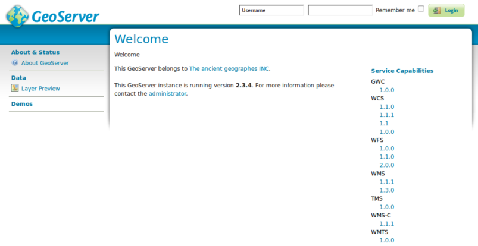Log in using the username admin and password geoserver. You will now see the admin page.
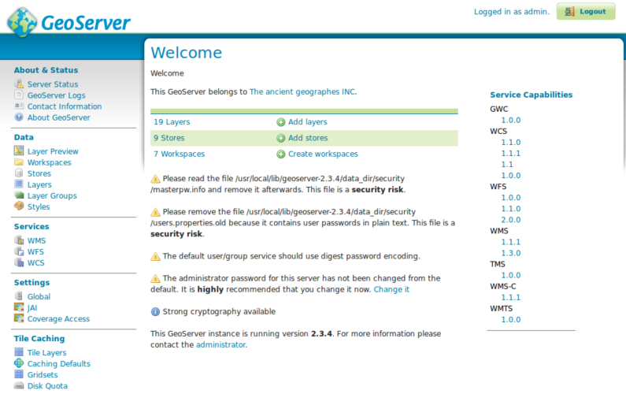Válassza ki a Layer Preview linket a baloldali menüből a Data rész tetején, hogy a szerver által betöltött rétegek előnézetét lássuk.
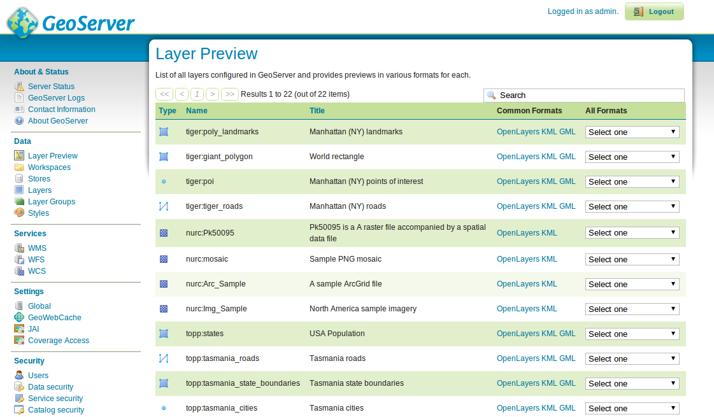Scroll to the bottom of the page and click on the OpenLayers link in the tiger-ny row. This will open a new window with a preview of some of the sample data.

Háromféleképpen nagyíthat a térképre:
- a baloldali nagyítás oszlopra kattintva, minélmagasabbra kattint annál nagyobb nagyítást lát.
- Az egérgörgő használatával (ha rendelkezik ilyennel), a felfelé görgetés nagyít és a lefelé görgetés kicsinyít.
- egy téglalapot húzva a térképen miközben a
shift billentyűtnyomva tartjuk - ez a kiválasztott téglalapra nagyít (amennyire ez beleillik a képernyőbe).
{kind=link}
{kind=link}
{kind=link}
Kísérletezzen ezzel a nézettel, és tekintse meg néhányat a többi előnézetből. Miután megismerkedett a meglévő adatok megjelenítésével, tovább léphet új adatok hozzáadására.
Loading data¶
Megjegyzés
A következő lépéseket nem tudja végrehajtani, ha csak olvasható fájlrendszert használ (mint például a DVD). Vagy egy virtuális gépet kell futtatnia vagy egy pendrive-ról vagy telepítse az OSGeoLive-ot (vagy csak a GeoServert) háttértárolójára.
Ebben a példában a Natural Earth adatokat használjuk, melyeket tartalmaz az OSGeoLive (/usr/local/share/data/natural_earth2/).
We need to create a Store for our data. From the GeoServer admin page go to Stores.
Click on Add new Store. You will see this page:
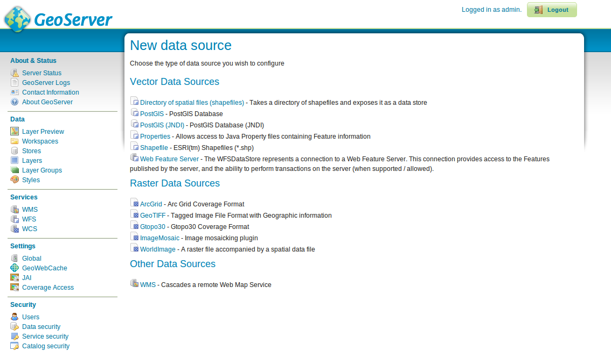Select the Directory of spatial files. You will see the following:
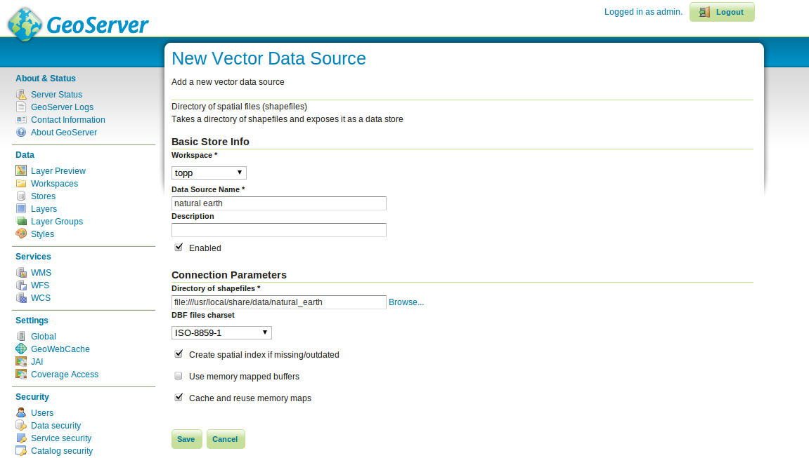Type in a name for the Data Store (for example, Natural Earth) and fill in the URL to the data set - in this case
/usr/local/share/data/natural_earth2/. You can use the browse button to find the directory if your data is somewhere else.Press save.
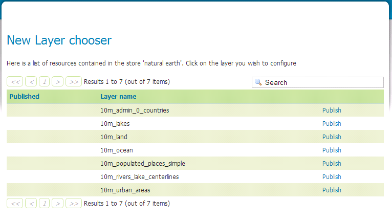Press publish next to one of the layers to finish adding the data. This will take you to the Layers page:
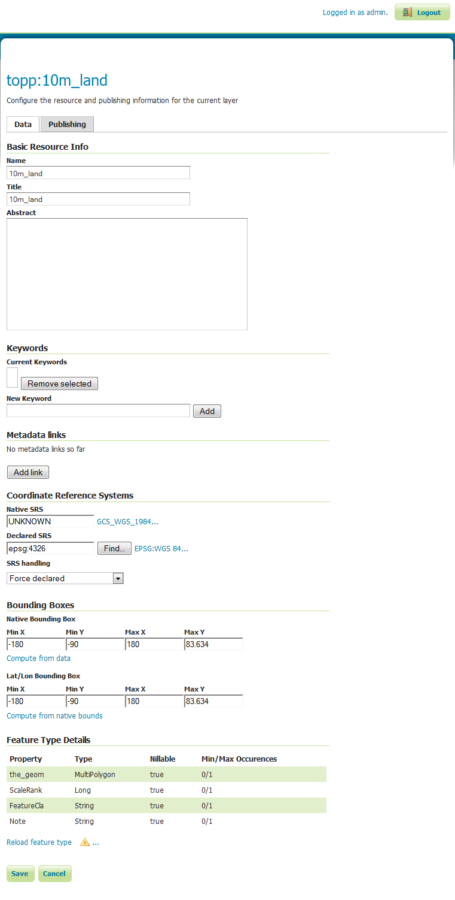As you scroll down the page you will see that GeoServer has filled in many of the fields for you. When you reach Coordinate Reference System you will notice that under Native SRS it says UNKNOWN you will need to fill in the next box (declared SRS) to make sure GeoServer knows where the data is.
You can type epsg:4326 in the box, or go to http://prj2epsg.org/search and paste in the string you see if you click on the link next to „UNKNOWN”.
Click on Compute from data and Compute from native bounds to fill in the Bounding Boxes.
Finally hit save and you have published your first layer.
{kind=link}
{kind=link}
{kind=link}
{kind=link}
Megjegyzés
Ne aggódjon, ha a réteg előnézet nem néz ki nagyon jól mivel az alapértelmezett stílust használja.A következő fejezetben megnézzük szebb stílusok létrehozását.
Ugyanezeket a lépéseket követheti más rétegekkel a könyvtárban a guilabel:Add a new resource gombbal a rétegek oldalon. Csak válassza a natural earth tárat a gördülő téglalapból, hogy visszatérjen a tárak oldalára.
Styling data¶
Styling a data set into a map layer GeoServer uses an OGC standard called Styled Layer Descriptor (SLD). These are represented as XML files which describe the rules that are used to apply various symbolizers to the data.
To get started, lets style the Land and Ocean datasets. You can create SLD files using a simple text editor, but sometimes a graphical editor is better. There are several options here but uDig allows you to open the shapefiles directly and apply simple styles using a GUI. It also provides a simple editor to modify the XML if I need to.
uDig használata egyszerű stílusok létrehozására¶
Megjegyzés
Az uDig használatáról további részleteket a uDig gyorstalpalóban találhat.
Open uDig and add the shapefiles (using the add data button in the top left hand corner).
Drag the ne_10m_land and ne_10m_ocean tables into the map window. uDig automatically applies a style (so you can see the data).
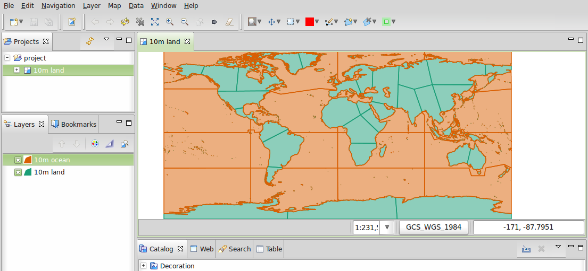In the Layer list select the style button (it looks like an artist’s palette).
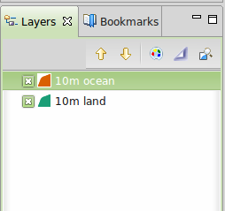This will open the Style Pane.
In the simple window we can easily select a nice blue for the oceans by clicking on the colored box on the fill tab and choosing from the color picker it produces. We can also increase the opacity of the fill to 100% to make the color look better. Pick the same blue for the border color so it will match.
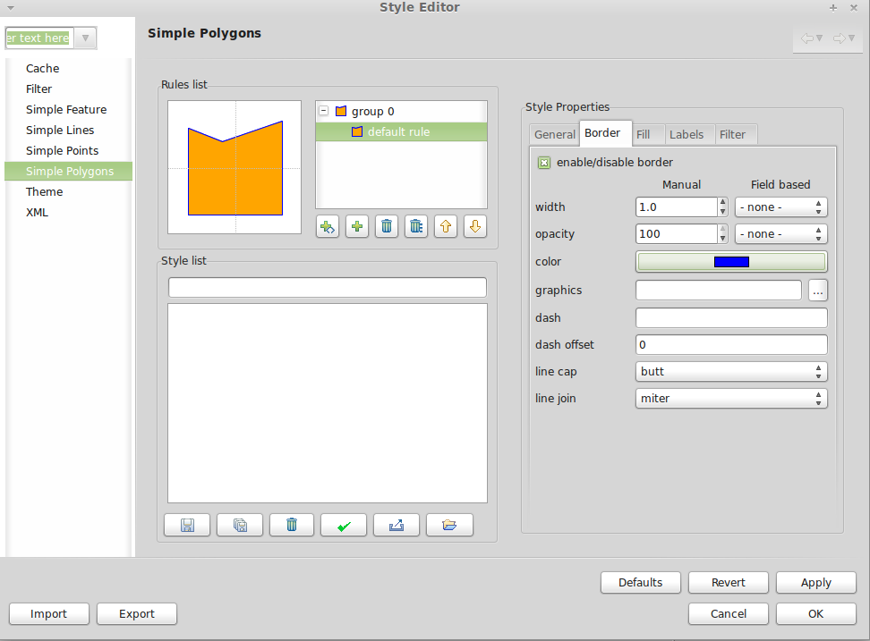Click
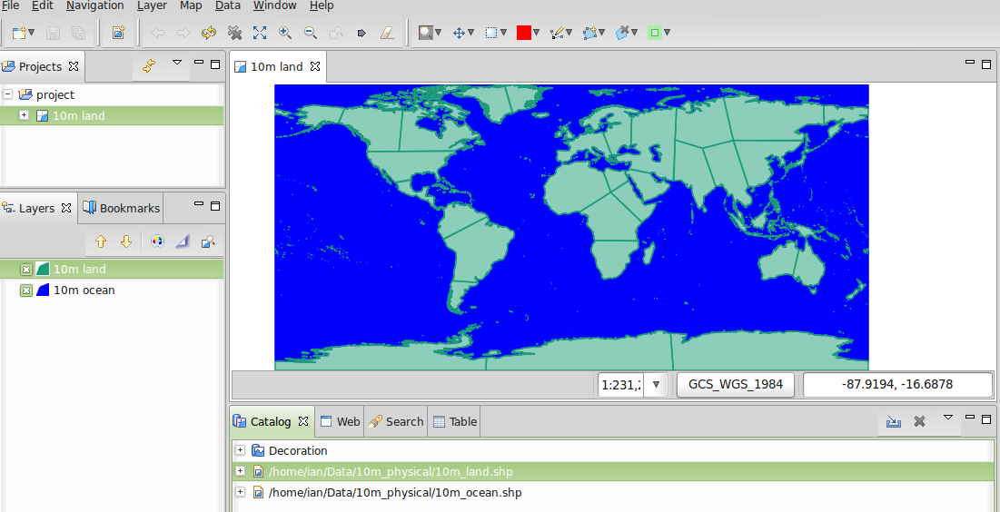OKand uDig will display the changes.Repeat the steps above to change the color of the land layer. You can use the
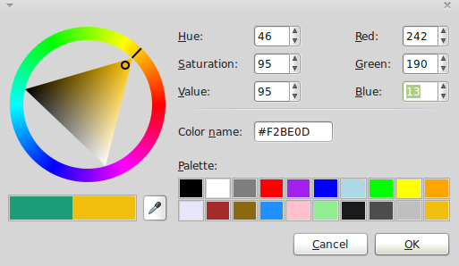define custom colorssection to create your preferred color.
{kind=link}
{kind=link}
{kind=link}
{kind=link}
{kind=link}
This gives a nice looking basic world map.
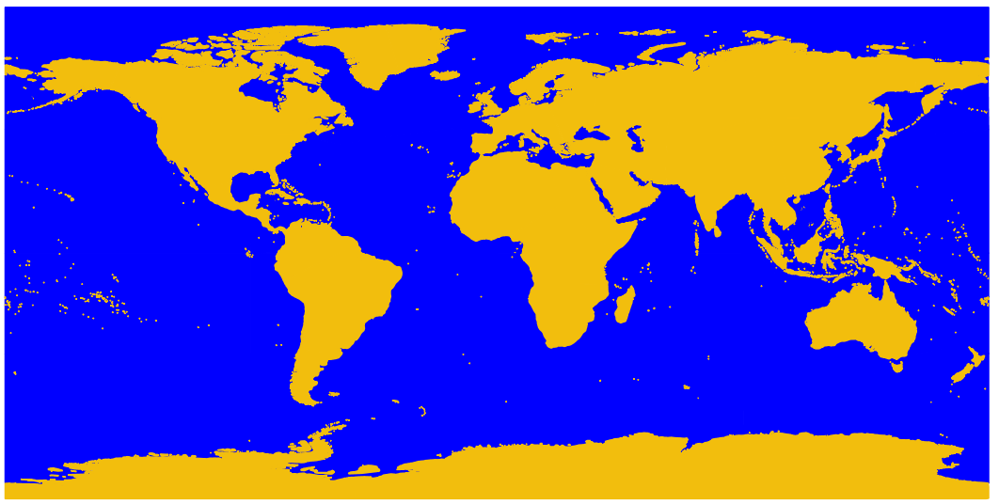{kind=link}
Adding the style to GeoServer¶
Now we need to transfer these styles to GeoServer.
- On the style window there is an export button which allows you to save the SLD file that defines your style.
- Once saved, you can go to the GeoServer admin page again and select
Styles(at the bottom of theDatasection). - Select the
Add New Stylelink. At the bottom of that page is a file upload box and a browse button. - Clicking browse to find the files you just saved.
- Click the upload link (next to the browse button) and a copy of the file appears in the editor.
- If you click on the validate button the highlighted lines will give you an error but you can safely ignore the error (or delete those lines as they don’t do anything).
- Press the Submit at the bottom of the page.

Adding the style to the layer¶
- Click on the Layers link in the Menu on the left of the GeoServer window.
- Click on the layer (e.g. ne_10m_land), then select the Publishing tab.
- Change the Default Style box to the name of the style you uploaded in the previous section.
- Now click Save and go to the Layer Preview page to check that it looks good.
Megjegyzés
Minta stílus fájlok vannak az összes Natural Earth példa rétegre itt /usr/local/share/geoserver.
Kliensek WMS rétegekhez¶
The Web Map Service (WMS) layers you are serving from GeoServer can be used with a variety of clients on this OSGeoLive distribution, including:
Add a layer from a NetCDF file¶
A GeoServer NetCDF modul lehetővé teszi raszterek publikálását NetCDF fájlokból.
NetCDF tároló konfigurálása¶
After running „Start GeoServer”
Login as the administrator.
Click on Add stores then NetCDF.
Enter a value for Data Source Name (this example uses „netcdf”) and a NetCDF URL. You can use this sample file:
file:///usr/local/share/data/netcdf/polyphemus_20120401.nc
Press „Save”, „Publish” the „O3” layer.
Scroll down to the bottom of the „Data” tab and press „Save” again.
{kind=link}
NetCDF réteg előnézete¶
Select „Layer Preview” from the menu on the left
Scroll down to find the „cite:O3” entry, and click on the „OpenLayers” link to show a preview of the layer.
Clicking on points will cause the value of „Ozone_concentration” to be shown in a table at the bottom of the map.

Megjegyzés
Ezt a GeoServer példányt a NETCDF_DATA_DIR rendszer tulajdonsággal konfigurálták, hogy NetCDF fájlokat publikáljon csak olvasható könyvtárakból.
Mi a következő?¶
Ezek csak az első lépések at úton a GeoServer használatához. Sokkal több funkcionalitása van, amit kipróbálhat.
- GeoServer Project home - http://geoserver.org/
- GeoServer User Manual - https://docs.geoserver.org/latest/en/user/
- GeoServer Tutorials - https://docs.geoserver.org/latest/en/user/tutorials/index.html
- GeoServer Styling Workshop - https://docs.geoserver.org/latest/en/user/styling/workshop/index.html